Japan / Ibaraki / Tsukubamirai
Tsukubamirai, Ibaraki: things to do, food and stays
Tsukubamirai · Ibaraki
Tsukubamirai
Highlighted on the Ibaraki map.
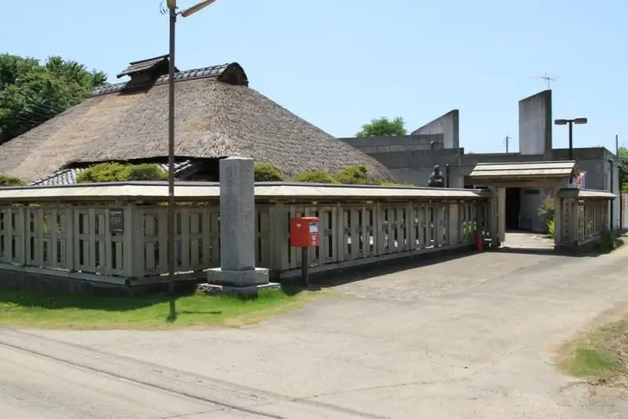
Stay
No bookable places to stay found in Tsukubamirai — nearest options in Moriya.
Dining
熊田家
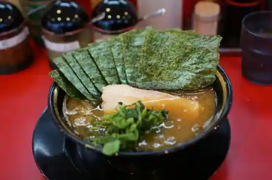
Kumada Ie
Cafe&BURGER MONTANA
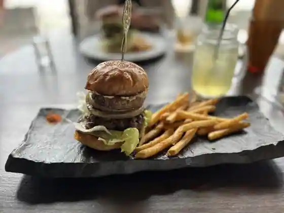
Cafe&BURGER MONTANA
もつの屋
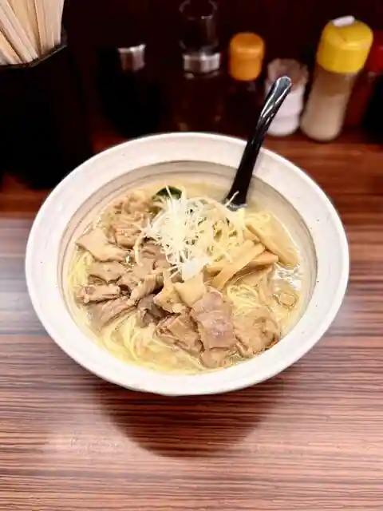
Motsuno Ya
小名浜
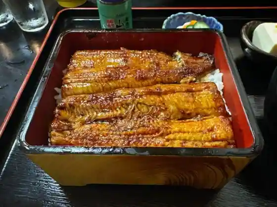
Onahama
水門やきそばあきた
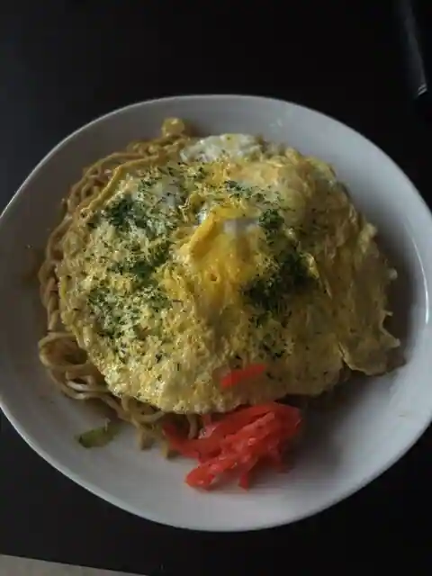
Suimon Yakisobakita
ドライブイン 中村
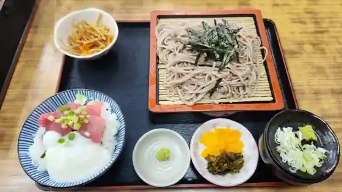
Doraibuin Nakamura
肉のふじ屋
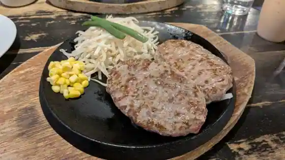
Niku Nofuji Ya
食事処まるとし
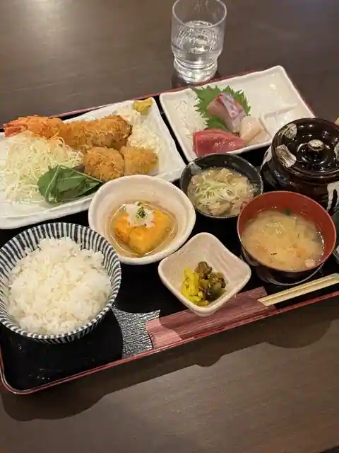
Shokuji Tokoro Marutoshi
さかなや魚平 守谷店
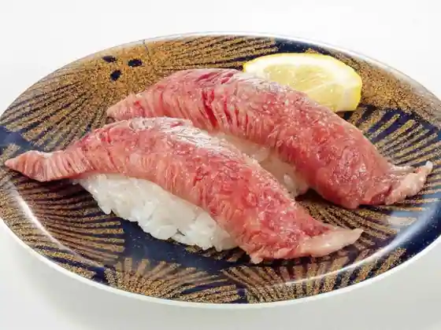
Sakanaya Sakana Taira Moriya
四十路
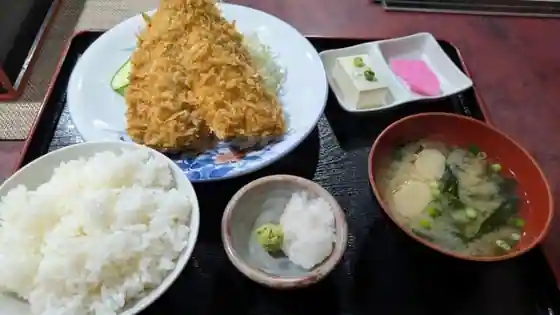
Yosoji
幸の家
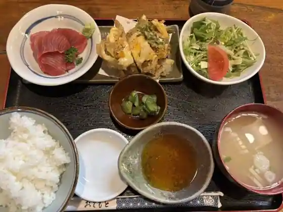
Sachi No Ie
一扇
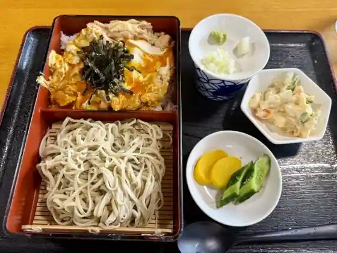
Ichi Ogi
手打ちそば処 鈴喜
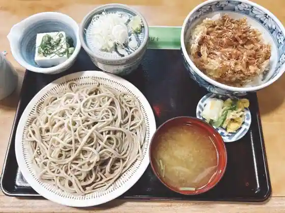
Teuchi Chisoba Tokoro Suzu Ki
さんぴ
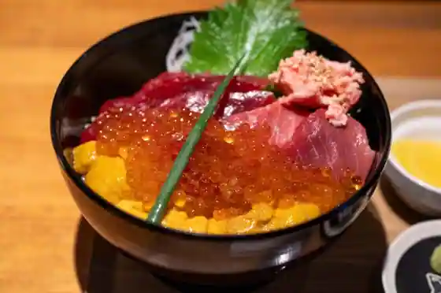
Sanpi
魚光食堂
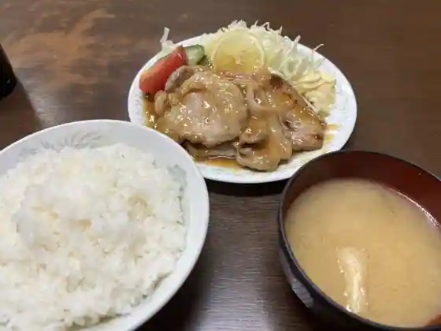
Uomitsu Shokudo
取手国際ゴルフ倶楽部 レストラン
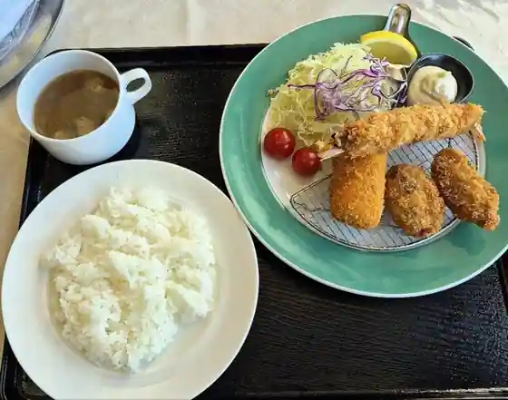
Toride Kokusai Gorufu Kurabu Restaurant
大久保利通商店
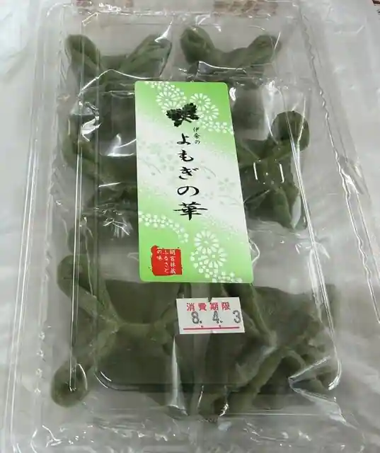
Okubo Toshimichi Sho
麺屋あきら
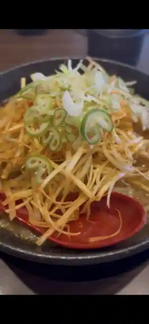
Men Ya Akira
レストラン 味楽乃
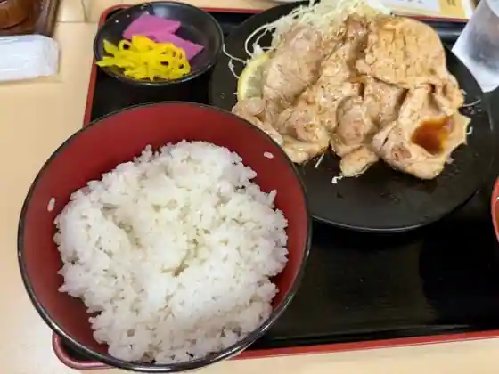
Restaurant Aji Raku No
焼肉せんりゅう つくばみらい店
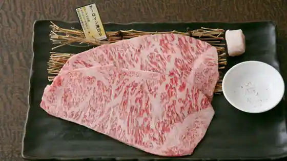
Yakiniku Senryu Tsukubamirai
中華蕎麦ごとう
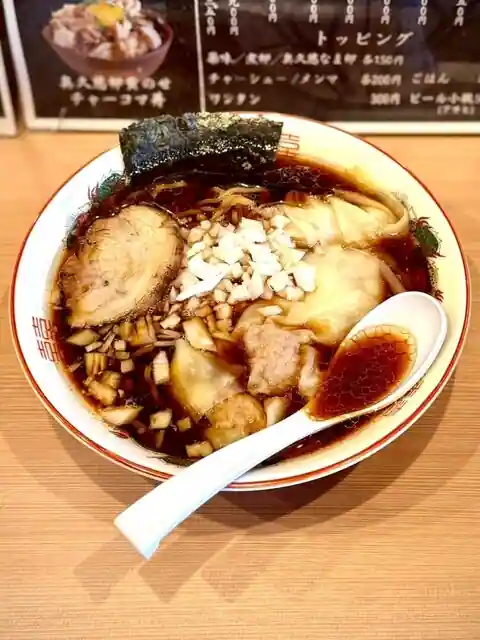
Chuka Soba Goto
いっちゃん亭
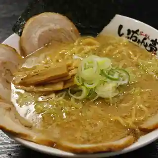
Itchan Tei
紅花
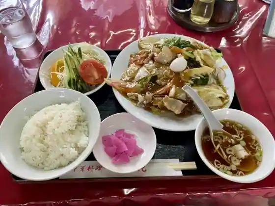
Benibana
やきとりバンク
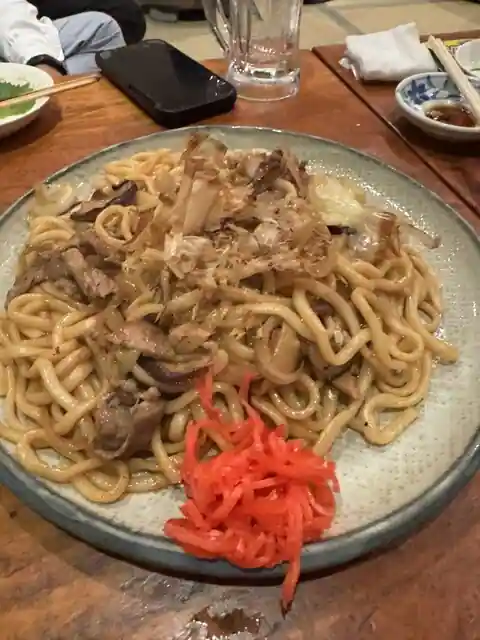
Yakitori Banku
Sights
Wapusuteshon Edo
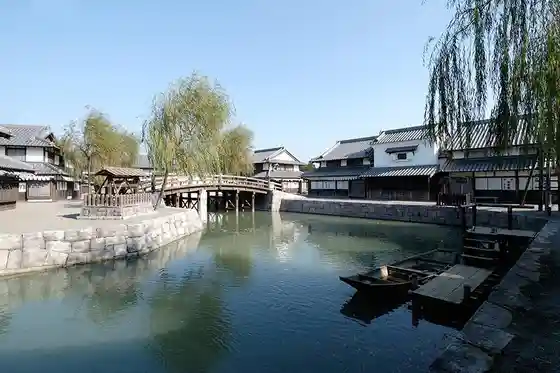
Mamiya Rinzo Memorial Museum
Fukuoka Seki
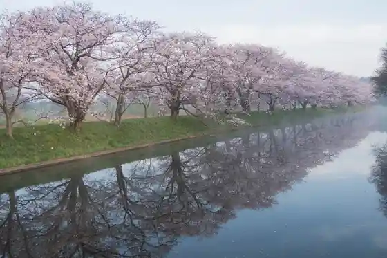
Fudo In (Itabashi Fudo Mikoto)
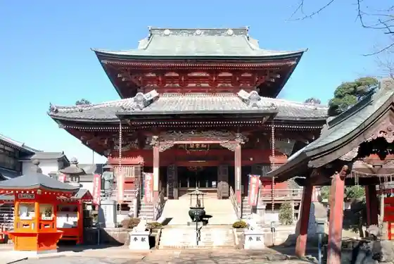
JA Ibaraki Minami Nosambutsu Chokubai Tokoro (Miraitsu Musume (Ko))
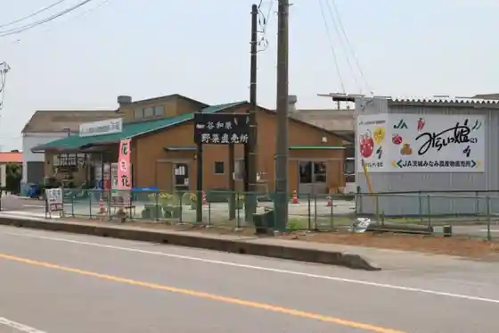
Aoki Seimen Kojo